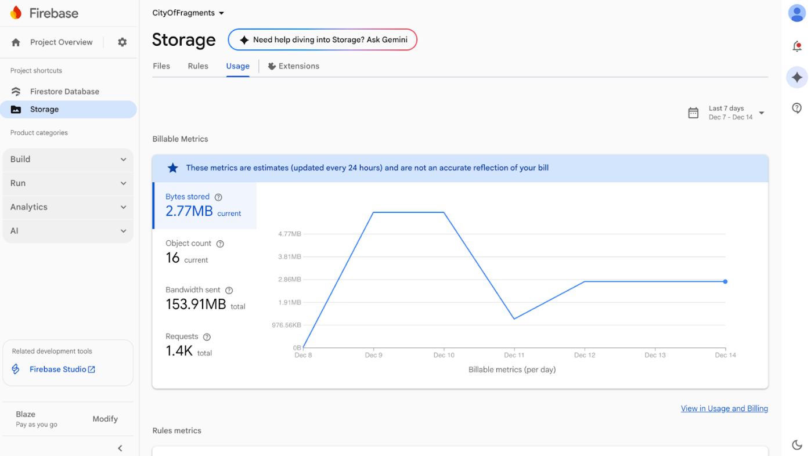
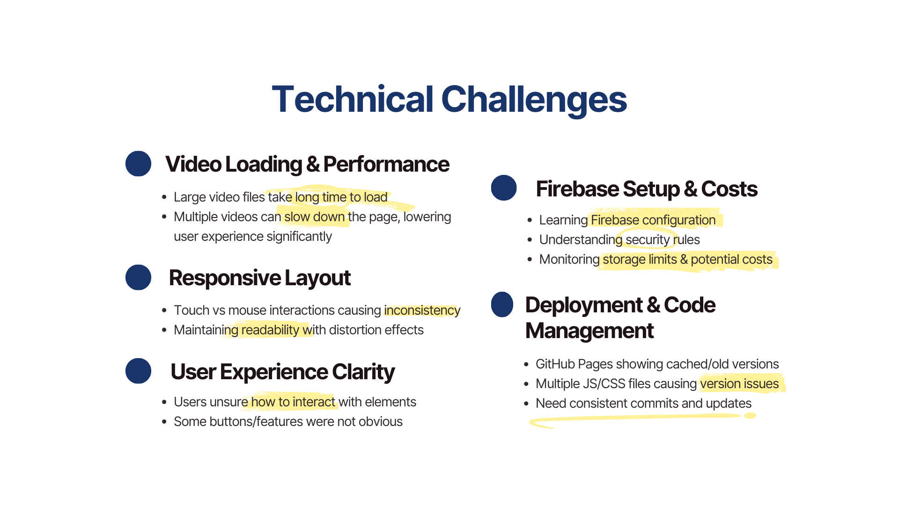

1.1 Artist Statement
City of Fragments reinterprets the city as a shifting archive of memories rather than a fixed physical
space. Using slit-scan distortion and user-generated uploads, the project reveals how urban moments stretch,
fragment, and transform as they are remembered and retold.
The slit-scan engine becomes a metaphor for memory itself, being unstable, reconstructed, and shaped by
time.
Each scanned fragment shows the city not as a singular narrative but as layered impressions, blurred
transitions, and partial traces.
Through temporal self-controlled graphic distortion and collective participation,
the work invites viewers to experience the city through shifting
perspectives, highlighting how technology mediates what we see,
recall, and ultimately understand about the world around us.
Video Demos

1.2 Project Concept

1.3 Key Inspirations

1.4 Implementation Methodology

1.5 Project Process & Evolution

1. Research & Concept
The project started from exploring the slit scan technique we learnt in imaging science studio, while combining it with an interest in how memory of the city, Hong Kong, is never experienced as a single, stable image by us, but as something fragmented, delayed, and constantly reconstructed. Through deeper research into time-based imaging techniques, slit-scan emerged as a method that could visually translate this instability.
Rather than treating the city as a fixed document, slit-scan allowed time and movement to be stretched and layered, aligning with the idea of urban memory as subjective and incomplete. This is our primary research concept regarding this project.
2. Technical Foundation
The web core functions as a web-based system combining HTML video elements, canvas-based rendering, and JavaScript control logic. It involves a video playback machine and respective top bar and buttons for switching videos. This provides diversity, reflecting Hong Kong fragmented into many corners with memories created by different individuals, while encouraging user participation.
<video id="mainPlayer"
autoplay muted playsinline preload="auto"
style="width:100%;height:100%;object-fit:cover;">
</video>
<button id="pausePlayBtn">Play / Pause</button>
<button id="nextBtn">Next</button>
<div id="locationLabel"></div>Initial development focused on testing slit-scan digitally. Early prototypes in Processing and p5.js helped understand pixel sampling, scan direction, and frame rate effects—see the slit-scan technical report. These tests defined practical limits like scan width and capture frequency before transitioning to web.
User data initially used LocalStorage for testing, but data was device-specific and cleared on reload. This revealed a mismatch with our goal of a shared, collective archive, requiring new methods for persistent, engaging web experience.
3. Core Functionality & Interaction
The slit-scan engine was refined in JavaScript with mouse-controlled scanning, shifting from passive viewing to active participation. Different scan types were assigned to videos based on movement—see slit-scan technical report.
A save function was developed for users to capture/export slit-scan images, reinforcing personal memory construction:
// HTML Button
<button id="screenshotBtn" class="circle-btn">
<svg viewBox="0 0 24 24">
<path d="M23 19a2 2 0 0 1-2 2H3a2 2 0 0 1-2-2V8a2 2 0 0 1 2-2h4l2-3h6l2 3h4a2 2 0 0 1 2 2z" fill="white"></path>
<circle cx="12" cy="13" r="4" stroke="white" stroke-width="2"/>
</svg>
</button>
// JavaScript
function captureScreenshot(player) {
const canvas = document.createElement('canvas');
const ctx = canvas.getContext('2d');
canvas.width = player.videoWidth;
canvas.height = player.videoHeight;
ctx.drawImage(player, 0, 0);
canvas.toBlob((blob) => {
const url = URL.createObjectURL(blob);
const a = document.createElement('a');
a.href = url;
a.download = `city-fragments-${Date.now()}.jpg`;
a.click();
URL.revokeObjectURL(url);
}, 'image/jpeg', 0.95);
}4. Additional Web Functions
From LocalStorage to Firebase
To support shared participation, the project moved from LocalStorage to Firebase. This transition allowed uploaded images to persist across sessions and be visible to all users, transforming the work from an individual interaction into a collective memory space. This setup establishes the backend infrastructure required for collective participation that we initially imaged and successfully made.
Firebase is used for two main functions:
- Storage: image file uploads
- Firestore: metadata and gallery indexing

Firebase initialization code example is below:
const firebaseConfig = {
apiKey: "...",
authDomain: "...",
projectId: "...",
storageBucket: "city-of-fragments.appspot.com"
};
firebase.initializeApp(firebaseConfig);
const storage = firebase.storage();
const db = firebase.firestore();Image Upload & Storage Workflow

Furthermore, users can upload slit-scan images, which are stored in Firebase Storage and indexed in Firestore. Once uploaded, images immediately appear in the public fragment gallery.
Image Upload Workflow:
const storageRef = storage.ref(`uploads/${file.name}`);
await storageRef.put(file);
const imageURL = await storageRef.getDownloadURL();
db.collection("fragments").add({
url: imageURL,
timestamp: Date.now()
});This structure is made to ensure that visual fragments persist even with reloading and made into an ever-present gallery.
Therefore, an upload page was developed with functions that allow users to contribute images, which immediately appear in the fragment collage gallery. I have also used the idea of Polaroids stuck to a wall. This shift expanded the project's narrative, allowing the archive to grow and evolve through user input continually.
5. Aesthetic & Testing
In the final phase, attention shifted to visual coherence and usability. Video playback frames were stabilised, the polaroid-style layout was refined, and interface elements were adjusted to improve clarity without reducing ambiguity.
To strengthen its web design identity, the website incorporates persistent interface elements, including a custom favicon and ambient audio recorded in Hong Kong. These elements contribute to a sense of place and continuity beyond visual interaction.
<link rel="icon" href="assets/favicon-32x32.png">
<audio id="ambientAudio" loop>
<source src="assets/tai-ping-shan-ambient.mp3">
</audio>Together, these systems transform the website into a cohesive, time-based artwork rather than a static documentation page. Performance testing across various browsers ensured optimal performance and usability.
1.6 Challenges

1.7 Future Work

1.8 Reflection & Takeaways
The City of Fragments evolved through continuous work on balancing initial creative ideas with technical limitations. Throughout the process, the project shifted from a visually driven experiment to a relatively complete system where user interaction became the most important goal we want to deliver.
One key takeaway was the importance of choosing web design as the medium, not just as a display platform, but as an active structure to shape the artwork, allowing users to interact and immerse themselves in it, regardless of the exhibit location. Early experiments using Processing helped clarify how slit-scan behaves in isolation. However, translating this effect into a browser environment revealed new constraints, performance limits, browser behavior, and responsiveness. These constraints were not obstacles to be removed, but factors that directly influenced design decisions, such as scan width, capture frequency, and canvas size.
Another significant learning came from persistence and participation. Initially, LocalStorage was used to ensure that we could build the system within the project's limited timeframe. However, it became clear that this approach did not fully express the project's intention of forming a shared archive. The transition to Firebase, despite the time and dedication spent, still marked a significant conceptual improvement: the work shifted from an individual, one-time experience to a collective and ever-present system. This change reinforced the idea that memory is not fixed, but continuously added and shaped by community.
The development of the image-saving function was also a meaningful moment in the project. Allowing users to export their slit-scan images transformed interaction into authorship. Each saved image became a personal fragment of the city, aligning with the project's broader aim of letting users perform and construct memory rather than passively consume it.
Artistically, the project deepened my understanding of time as a material. Slit-scan was not treated as a visual effect alone, but as a method for representing instability, delay, and distortion, which are the qualities that define how urban memories can be visually presented. The final system embraces imperfection, variation, and unpredictability, reflecting the fragmented nature of both the city's physical presence and human memory.
In a nutshell, this project highlighted the value of process-led experimentation, where technical testing, failures, and revisions actively slowly achieve the outcome we want. Rather than forcing a fixed outcome, City of Fragments allowed the system to evolve through time and effort, resulting in a work that balances technical parts with artistic purposes with creative room to explore.
References
- Boström, J. (2016). Cultural Heritage in Planning - Urban Transition in Hjorthagen Faculty of Landscape Architecture, Horticulture and Crop Production Science Degree Project - 30 Credits Landscape Architecture - Master’s Programme. stud.epsilon.slu.se
- Cassinelli, Á., & Ishikawa, M. (2004). Khronos Projector.
- Codeguage. (2025). Course: Advanced JavaScript - The FileReader API. codeguage.com
- Crooks, D. (2018). Static No.23 - Revolve.
- Davidhazy, A. (2025). Slit-scan photography. RIT Digital Institutional Repository. repository.rit.edu
- Levin, G. (2020). An Informal Catalogue of Slit-Scan Video Artworks and Research - Golan Levin and Collaborators. flong.com
- Mehringer, J. (2025). Slit-scan - Eyecandy Technique. eyecannndy.com
- Never, D. (2025). Deb Never - Momentary Sweetheart (Official Video). youtu.be
- Nora, P. (1994). Les lieux de mémoire. Gallimard.
- Utterback, C. (2000). Liquid Time Series.
- Wang, W. B., Zhang, Y., Bing, Y., Chen, Y. S., Yi, H., Ma, J., & Wang, G. Z. (2025). The Temporality of Duration: An Exploratory Study on Slit-Scan Photography. SIGGRAPH Talks. doi.org